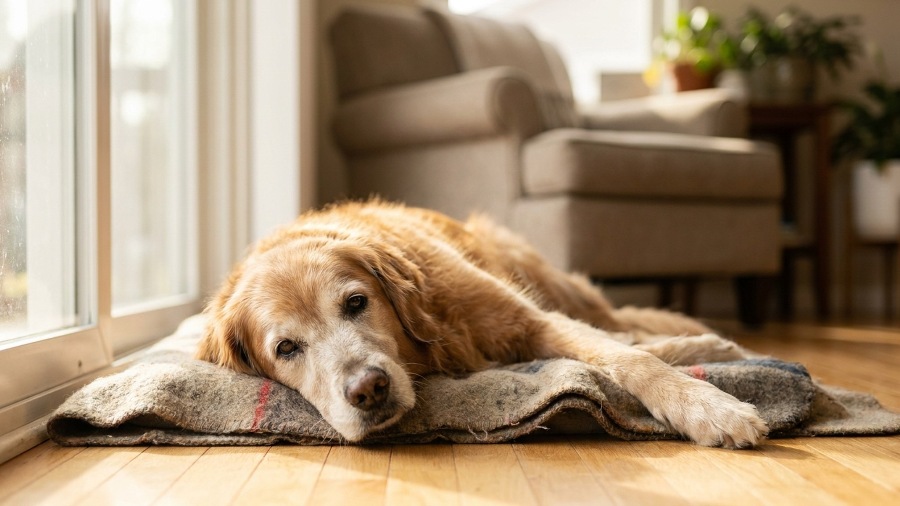

Собаки скрывают боль. Это эволюционный механизм: слабость в стае — уязвимость. Артрит у собак диагностируется поздно именно поэтому. К моменту, когда хозяин замечает явную хромоту, воспаление суставов может длиться месяцами. Разбираем, как поймать болезнь раньше, какое лечение работает в 2024-2026 году и как организовать жизнь собаки так, чтобы она была комфортной.
🐾 Питомец ведёт себя странно?
AnimaLife расшифрует поведение кошки и собаки и подскажет, что делать. Попробуйте бесплатно прямо в мессенджере.
Остеоартрит (ОА) — дегенеративное заболевание суставов. Хрящ, который служит амортизатором, разрушается: кость трётся о кость, возникает воспаление, боль, деформация сустава. Это хронический процесс, который прогрессирует годами.
Возраст начала зависит от размера собаки:
По данным European College of Veterinary Surgeons, остеоартрит присутствует примерно у 20% взрослых собак и у 80%+ собак старше 8 лет у крупных пород. Из них значительная часть не получает лечения, потому что хозяева принимают симптомы за «нормальное старение».
Дисплазия тазобедренного и локтевого сустава — ключевой предрасполагающий фактор. Она генетически обусловлена и ускоряет развитие артрита.
Явная хромота — это уже средняя или поздняя стадия. Ранние признаки тоньше:
Диагноз «остеоартрит» ставится на основе двух компонентов:
Не стоит ждать, пока «само станет заметно». Если собаке 7+ лет и вы заметили хотя бы 2-3 ранних признака — плановый визит к ортопеду. Ранняя диагностика означает более раннее начало лечения и медленнее прогрессирующую болезнь.
Librela (бединветмаб) — революционный препарат, зарегистрированный в России в 2024 году. Моноклональное антитело, которое блокирует NGF (фактор роста нервов) — ключевой медиатор хронической боли при артрите. Вводится подкожно раз в месяц. Эффект: снижение болевого синдрома на 60-80% у большинства собак, улучшение подвижности, восстановление активности. Минимальный спектр побочных эффектов по сравнению с НПВП. Меняет качество жизни кардинально.
НПВП (нестероидные противовоспалительные препараты) — мелоксикам, карпрофен, гарапоксиб. Эффективны при купировании воспаления и боли. Применяются курсами или постоянно с мониторингом функции почек и печени (анализ крови каждые 3-6 месяцев). Не назначайте сами, особенно человеческие НПВП — дозировки, токсичность и метаболизм у собак кардинально отличаются.
Хондропротекторы (глюкозамин, хондроитин, омега-3 в высоких дозах): широко применяются, но доказательная база скромная. Систематические обзоры 2022-2024 годов показывают умеренный или слабый эффект. Вред не доказан, польза — у части собак есть. Как самостоятельное лечение — недостаточны; как дополнение к основной терапии — приемлемо.
Физиотерапия — лазеротерапия (LLLT), магнитотерапия, TENS, гидротерапия. В руках специалиста дают хороший эффект, особенно в комбинации с фармакологией.
Плавание и гидротерапия — вода снимает нагрузку с суставов, при этом мышцы работают. Ключевой элемент реабилитации при артрите. Если есть возможность — гидробеговые дорожки в ветеринарных реабилитационных центрах. Москва, Санкт-Петербург — такие центры есть, список растёт.
🐾 Здоровье питомца под контролем
AI-ветеринар, дневник здоровья и персональные советы для вашего питомца — установите AnimaLife бесплатно.
Вес. Каждый лишний килограмм — дополнительная нагрузка на суставы. У собак с ожирением артрит прогрессирует в 2-3 раза быстрее. Снижение веса на 6-8% заметно улучшает подвижность уже через 6-8 недель. Это самая эффективная «бесплатная» мера.
Ортопедический матрас. Пенная основа с эффектом памяти или ортопедическая пена снижает точечное давление на суставы во сне. Не жёсткий пол, не тонкая подстилка. Матрас должен быть достаточно большим, чтобы собака могла вытянуться полностью.
Пол без скольжения. Паркет и ламинат — опасность для собаки с артритом. При скольжении она напрягает мышцы нестандартно, что усиливает боль и риск травмы. Решение: нескользящие коврики по основным маршрутам, силиконовые накладки на лапы.
Пандусы вместо ступенек. Заход в машину, подъём на диван — через наклонный пандус. Пандус из дерева или пластика — несложно купить или сделать самому.
Прогулки: короче и чаще. Вместо одной долгой прогулки — 3-4 коротких. 15-20 минут умеренного темпа лучше, чем час хромающего «марш-броска». Не давайте собаке перегружаться в хорошие дни — это провоцирует обострение на следующий.
Тепло. Суставы при артрите хуже переносят холод и сырость. Осенью и зимой — попона, обувь для прогулок, тёплое лежачее место не на сквозняке.
Это тема, которую многие избегают. Но её нужно обсуждать честно.
Артрит не убивает. Но хронический неконтролируемый болевой синдром разрушает качество жизни. Когда боль не купируется доступными средствами, собака не ест, не встаёт, не взаимодействует с хозяином — это уже не жизнь, а страдание.
Признаки того, что качество жизни критически снизилось:
Использование шкалы качества жизни (например, шкала HHHHHMM Aloha — боль, аппетит, гидратация, гигиена, счастье, подвижность) помогает принимать решение менее эмоционально и более объективно. Обсудите с ветеринаром — это его задача тоже, не только хозяина.
Эвтаназия при неуправляемом страдании — акт милосердия. Это не отказ от собаки. Это последнее, что вы можете сделать для неё.